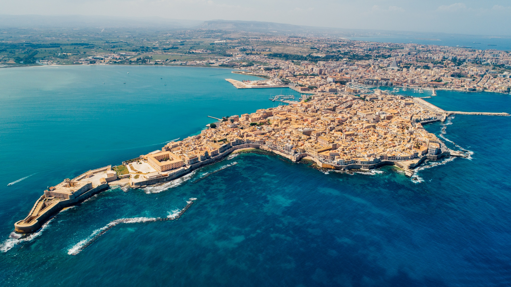
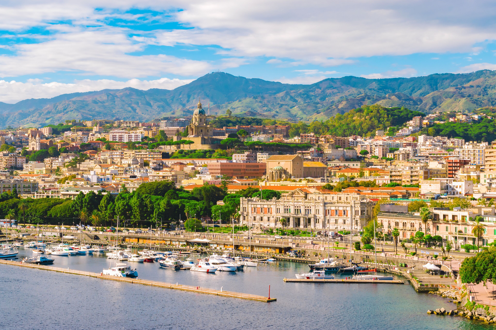
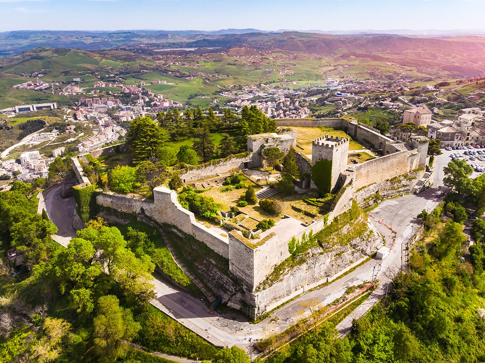
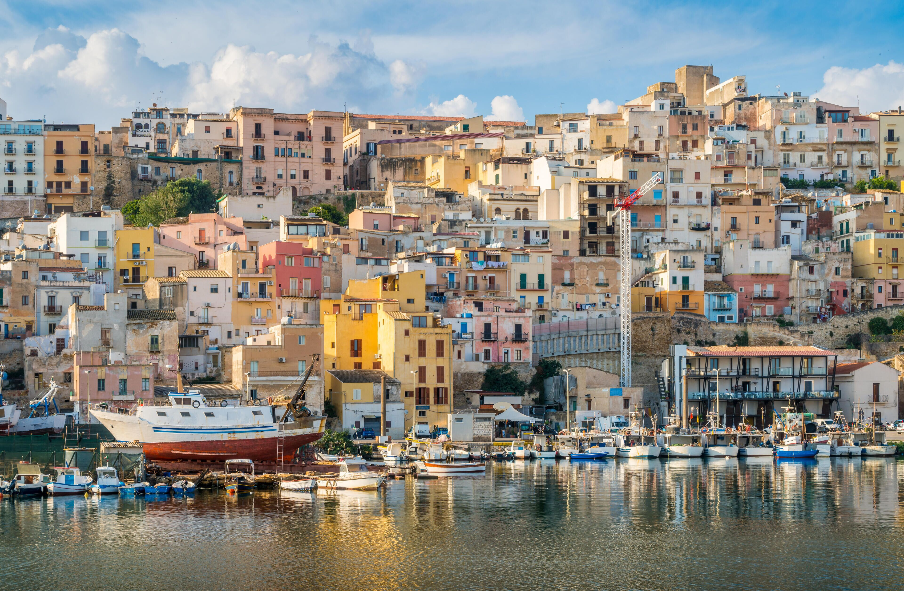

Catania

Catania è un'antica città portuale sulla costa orientale della Sicilia. È situata ai piedi dell'Etna, un vulcano attivo con sentieri che arrivano fino alla sua sommità. L'ampia piazza centrale della città, Piazza del Duomo, è caratterizzata dalla pittoresca statua della Fontana dell'Elefante e dalla Cattedrale, riccamente decorata.
Nell'angolo sudoccidentale della piazza, La Pescheria, il mercato del pesce che si tiene nei giorni feriali, è un vociante spettacolo circondato da ristoranti che servono pesce.
Scopri la piazza →Palermo

Palermo è il capoluogo della Sicilia. La Cattedrale di Palermo, del XII secolo, ospita tombe reali, mentre l'imponente Teatro Massimo neoclassico è famoso per gli spettacoli di opera lirica. Sempre in centro si trovano il Palazzo dei Normanni, un palazzo reale risalente al IX secolo, e la Cappella Palatina, con mosaici bizantini.
Gli affollati mercati includono il mercato di strada centrale Ballarò e la Vucciria, vicino al porto.
Scopri la piazza →Siracusa

Siracusa è una città sulla costa ionica della Sicilia. È nota per le rovine dell'antichità. Il centrale Parco Archeologico della Neapolis racchiude l'anfiteatro romano, il Teatro Greco e l'Orecchio di Dionisio, una grotta scavata nel calcare a forma di orecchio umano.
Il Museo Archeologico Regionale Paolo Orsi espone reperti in terracotta, ritratti di epoca romana e scene dell'Antico Testamento scolpite nel marmo bianco.
Scopri la piazza →Messina

Messina è una città portuale nella Sicilia nord-orientale, separata dall'Italia continentale dallo Stretto di Messina. È nota per il Duomo di Messina, di epoca normanna, caratterizzato da portale gotico, finestre del XV secolo e orologio astronomico sul campanile.
Nelle vicinanze si trovano fontane in marmo decorate con figure mitologiche, come la Fontana di Orione, con le sue iscrizioni scolpite, e la Fontana del Nettuno, sormontata da una statua del dio del mare.
Scopri la piazza →Ragusa

Ragusa è una città nel cuore dell'altopiano ibleo, nella Sicilia sud-orientale. La città è divisa in due parti: Ragusa Superiore, la parte moderna, e Ragusa Ibla, il centro storico barocco patrimonio UNESCO dal 2002.
Il Duomo di San Giorgio, capolavoro del barocco siciliano progettato da Rosario Gagliardi nel XVIII secolo, domina la Piazza del Duomo di Ibla con la sua spettacolare scalinata.
Scopri la piazza →Enna

Enna è la città più alta d'Italia tra i capoluoghi di provincia, soprannominata "l'ombelico della Sicilia" per la sua posizione geografica al centro dell'isola. Dalla piazza principale si gode una vista panoramica eccezionale sulle colline siciliane.
La Torre di Federico II, imponente struttura ottagonale sveva del XIII secolo, e il Castello di Lombardia sono tra i monumenti più importanti della città.
Scopri la piazza →Caltanissetta

Caltanissetta è il capoluogo della provincia omonima, situata nel centro-sud della Sicilia. La città è nota per le sue tradizioni religiose, in particolare la famosa processione dei Misteri durante la Settimana Santa.
Il centro storico è caratterizzato dalla Cattedrale di Santa Maria la Nova e da numerose chiese barocche che arricchiscono il paesaggio urbano.
Scopri la piazza →Agrigento

Agrigento è una città sulla costa meridionale della Sicilia, famosa in tutto il mondo per la Valle dei Templi, uno dei più importanti siti archeologici al mondo, patrimonio UNESCO dal 1997.
Il centro storico medievale conserva pregevoli esempi di architettura normanna e barocca. Il Museo Archeologico Regionale ospita una delle più importanti collezioni di antichità siciliane.
Scopri la piazza →Trapani

Trapani è una città sul mare nella Sicilia occidentale, affacciata sulle Isole Egadi. La città è famosa per la lavorazione del corallo e del sale marino, e per la Processione dei Misteri del Venerdì Santo, una delle più spettacolari processioni della Sicilia.
Le Saline di Trapani e Paceco, con i loro mulini a vento, sono un paesaggio iconico della zona.
Scopri la piazza →